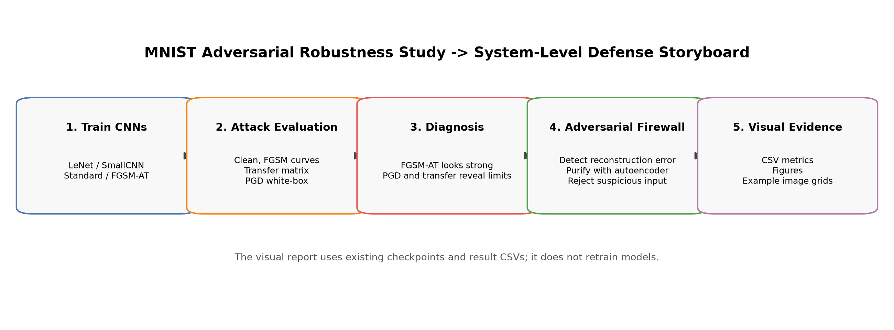
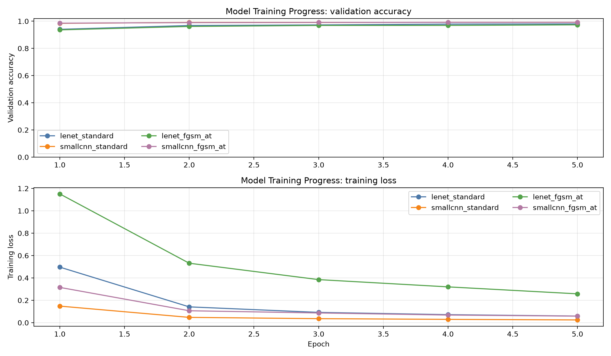
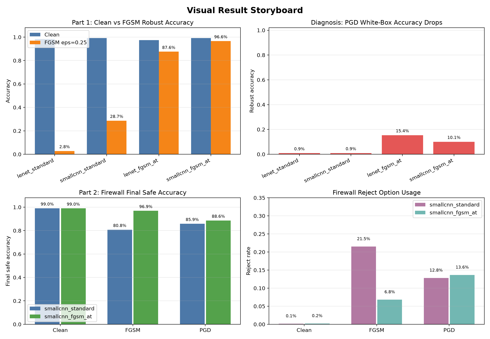
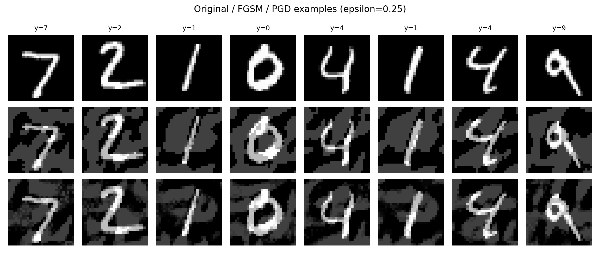
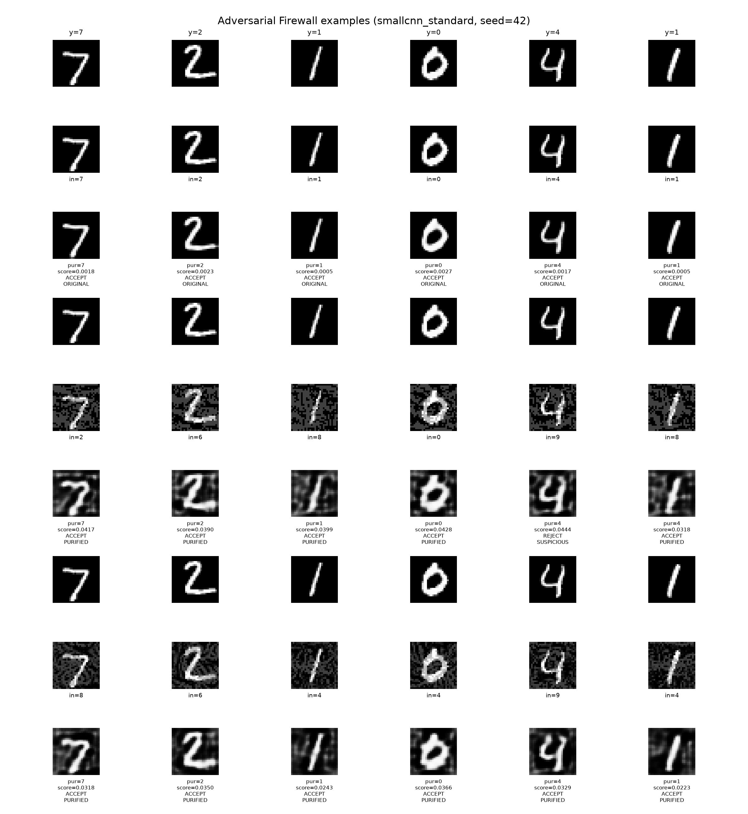
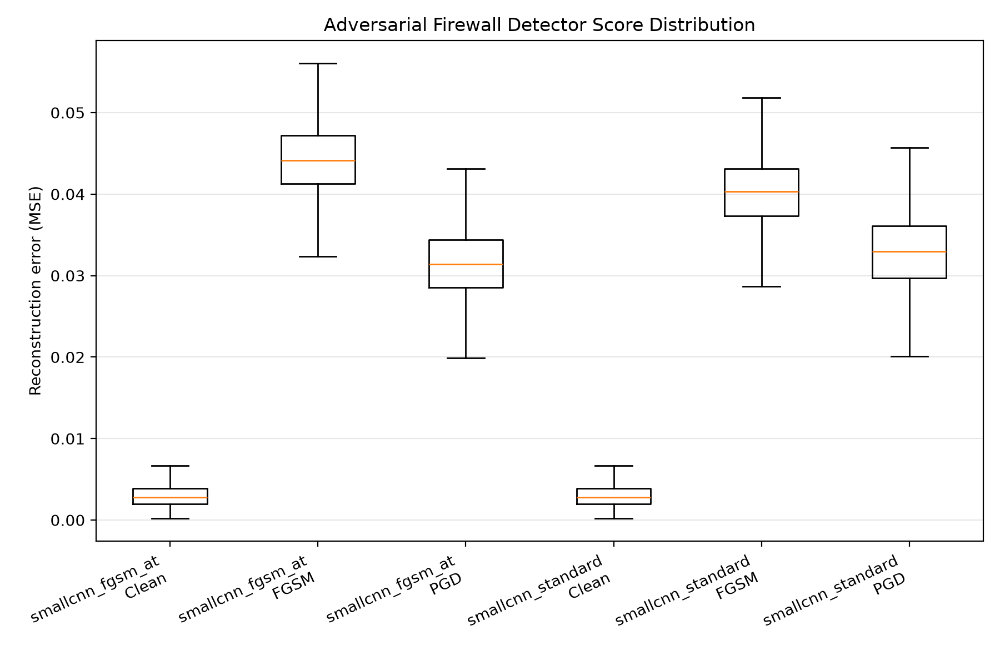
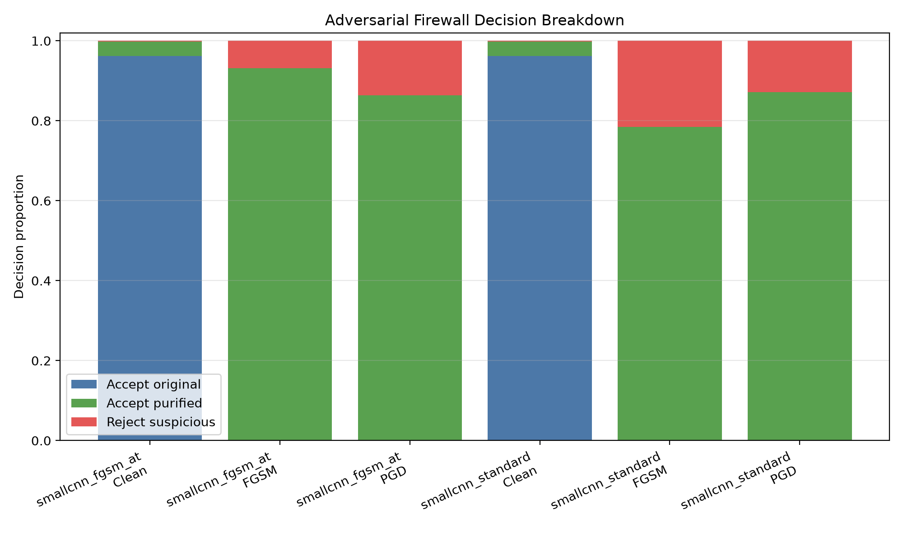
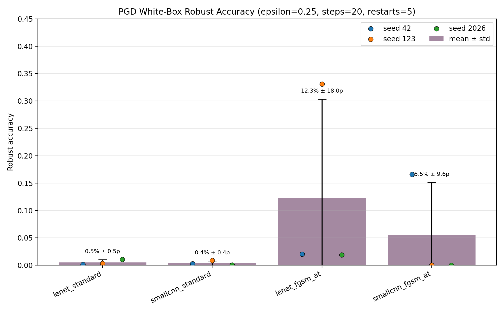

Project Flow

The whole story: train models, attack them, diagnose limits, then add Firewall defense.
이미 학습된 checkpoint와 저장된 CSV/PNG를 사용해, FGSM 방어의 한계와 Adversarial Firewall 확장을 발표용 흐름으로 재구성한 정적 보고서입니다.
Firewall 값은 seed 42 full test set 기준입니다. 기존 FGSM/PGD/전이성 실험은 여러 seed 결과를 포함합니다.

The whole story: train models, attack them, diagnose limits, then add Firewall defense.

Validation accuracy and training loss from the previously trained CNN checkpoints.

One slide that connects FGSM robustness, PGD collapse, and Firewall final safe accuracy.

Original, FGSM, and PGD examples used in the robustness study.

Original, attacked/input, and autoencoder-purified images with predictions and decisions.

Reconstruction-error distributions for clean, FGSM, and PGD inputs.

How often the system accepted original inputs, accepted purified inputs, or rejected suspicious inputs.

PGD-20 with five restarts shows seed instability and limits of FGSM-only robustness.
현재 checkpoint 파일 25개를 기준으로 보고서를 생성했습니다.
| Checkpoint | Size |
|---|---|
| autoencoder_seed42.pt | 0.51 MB |
| lenet_fgsm_at_seed123_best_val.pt | 0.72 MB |
| lenet_fgsm_at_seed123_last.pt | 0.72 MB |
| lenet_fgsm_at_seed2026_best_val.pt | 0.72 MB |
| lenet_fgsm_at_seed2026_last.pt | 0.72 MB |
| lenet_fgsm_at_seed42_best_val.pt | 0.72 MB |
| lenet_fgsm_at_seed42_last.pt | 0.72 MB |
| lenet_standard_seed123_best_val.pt | 0.72 MB |
| lenet_standard_seed123_last.pt | 0.72 MB |
| lenet_standard_seed2026_best_val.pt | 0.72 MB |
| lenet_standard_seed2026_last.pt | 0.72 MB |
| lenet_standard_seed42_best_val.pt | 0.72 MB |
| lenet_standard_seed42_last.pt | 0.72 MB |
| smallcnn_fgsm_at_seed123_best_val.pt | 5.38 MB |
| smallcnn_fgsm_at_seed123_last.pt | 5.38 MB |
| smallcnn_fgsm_at_seed2026_best_val.pt | 5.38 MB |
| smallcnn_fgsm_at_seed2026_last.pt | 5.38 MB |
| smallcnn_fgsm_at_seed42_best_val.pt | 5.38 MB |
| smallcnn_fgsm_at_seed42_last.pt | 5.38 MB |
| smallcnn_standard_seed123_best_val.pt | 5.38 MB |
| smallcnn_standard_seed123_last.pt | 5.38 MB |
| smallcnn_standard_seed2026_best_val.pt | 5.38 MB |
| smallcnn_standard_seed2026_last.pt | 5.38 MB |
| smallcnn_standard_seed42_best_val.pt | 5.38 MB |
| smallcnn_standard_seed42_last.pt | 5.38 MB |